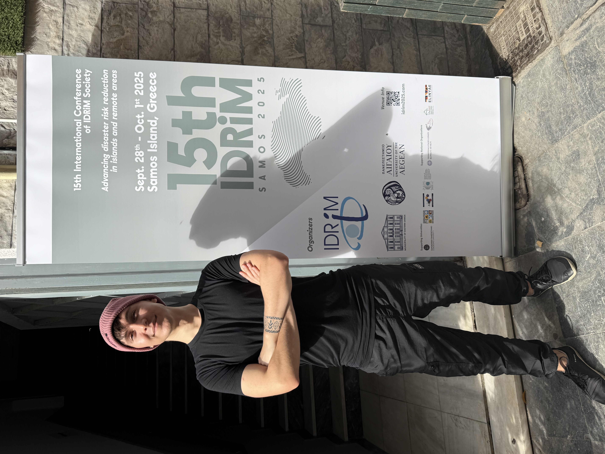
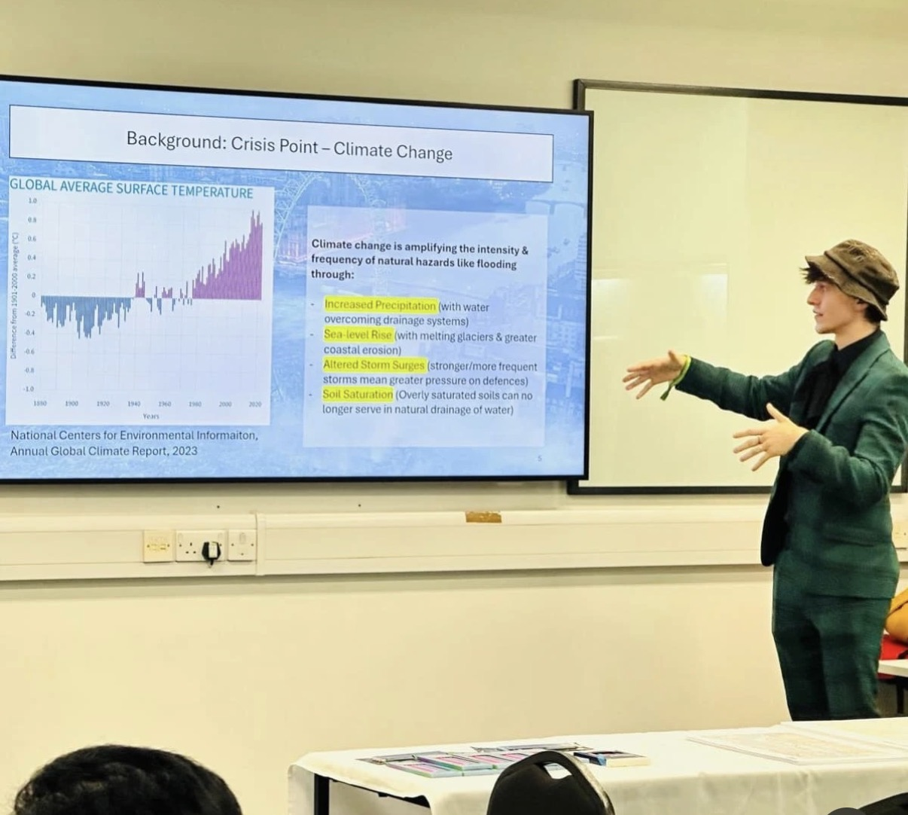
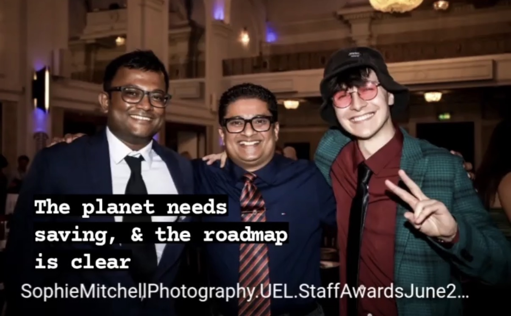
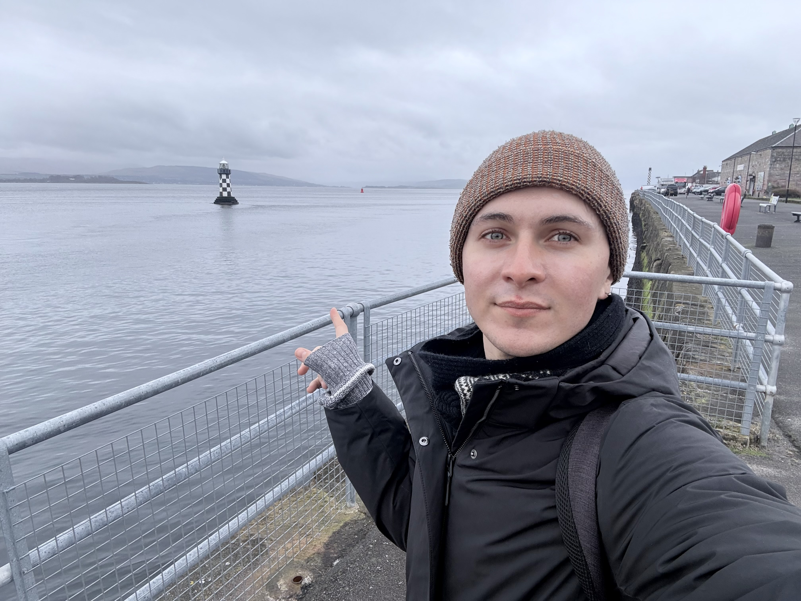

Gaining applicable insights about nature to build resilience to hazards.
How cities absorb and recover from acute shocks through community, governance, and spatial design.
Cultural immersion, participatory design, posthumanist theory, and narrative approaches to disaster research.
School outreach, public engagement, and curriculum design to build civic preparedness and environmental literacy.
Cross-cultural research in UK and Japan; fluency navigating Western and East Asian institutional contexts.
Translating complex environmental research into actionable policy, including advisory work.
I am a Disaster Scientist, completing a part-time PhD at UCL's Department of Risk and Disaster Reduction & the Institute of Education, working at the intersection of ecology, education, and disaster science.
My fieldwork takes me across Europe and Asia — areas with radically different relationships to urban nature — exploring how urban forests, rain gardens, and living infrastructure shape community resilience before, during, and after disaster.
I work with creative research methods, combining immersive fieldwork with posthumanist theory, participatory mapping, and policy analysis. I believe disaster science must engage seriously with culture, aesthetics, and the more-than-human world.
Beyond academia, I am engaged in public education, political advocacy, and practical outreach, including school programmes on resilience in emergencies across London, as well as international work helping direct aid to vulnerable communities.
I speak Polish, English, and Japanese (In progress), with intermediate BSL. I also practice martial arts, survivalism, and coding to maintain versatility.
